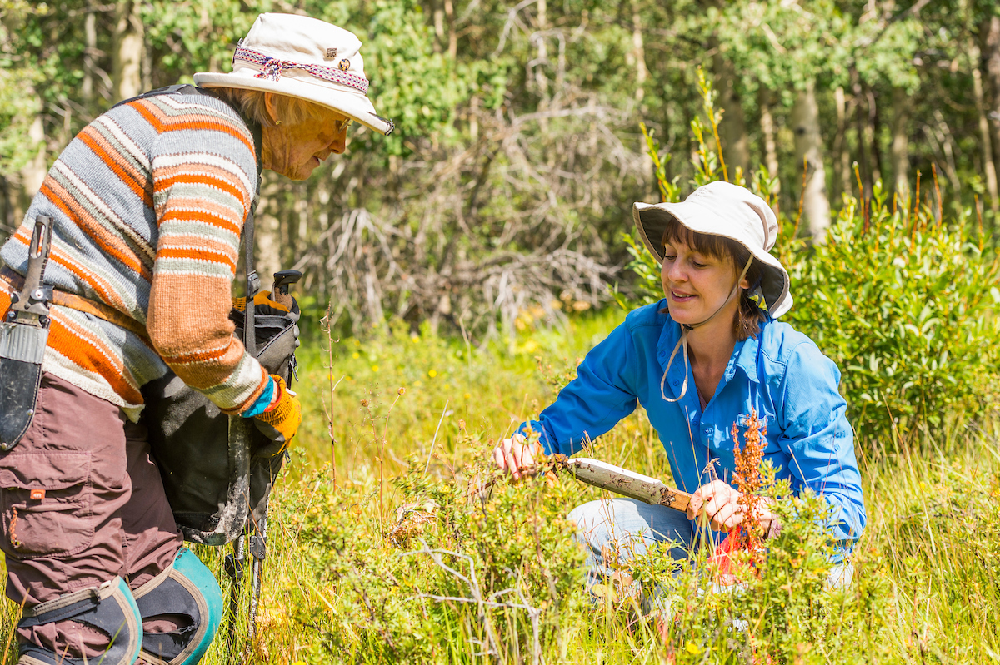

Specimen Collection Protocol Additional Info for Cacti Collections Complementing Specimens with iNaturalist Records
Collecting Vascular Plant Specimens
Before collecting herbarium voucher specimens it is important to familiarize yourself with the preferred methods and data collection. Review the template for Herbarium Specimen Data Recording spreadsheet to see the types of data that need to be recorded. Ultimately, this template will be used to submit data for upload into the appropriate databases. There is a data template specific to Cultivated Herbarium Specimens that are collected from gardens or greenhouses at Denver Botanic Gardens. It is likely that you will collect Tissue Samples along with your specimens. Review the Collecting Tissue Page.
KHD Specimen and Data with Tissue Summary Workflow Illustrated Collection Protocol: Team of 2 Illustrated Collection Protocol: Team of 3 Illustrated Collection Protocol: Team of 4